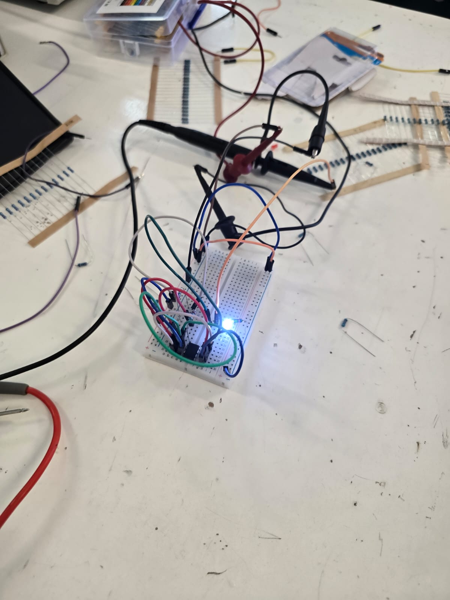

LED parpadeante con 555
Objetivo
Implementar un oscilador simple con el temporizador 555 para encender y apagar un LED de forma periódica, registrando materiales, conexiones y verificación.
Descripción rápida del 555
El 555 funciona como generador de onda cuadrada en modo astable: un capacitor se carga y descarga a través de dos resistencias y la salida (pin 3) conmuta cada vez que el voltaje del capacitor cruza los umbrales internos.
Materiales utilizados
- Protoboard
- NE555
- LED + resistencia limitadora (220 Ω – 1 kΩ)
- R1 y R2 para el astable (1 kΩ – 100 kΩ tÃpicos)
- Capacitor electrolÃtico (1 µF – 470 µF)
- Jumpers
- Fuente DC (5–9 V)
Conexiones paso a paso
- Pin 1 → GND
- Pin 8 → VCC
- Pin 4 (RESET) → VCC
- Unir pines 2 (TRIG) y 6 (THR)
- R1 entre VCC y pin 7 (DIS)
- R2 entre pin 7 (DIS) y pines 2/6
- Capacitor C entre pines 2/6 y GND (positivo a 2/6 si es electrolÃtico)
- Pin 3 (OUT) → resistencia → ánodo del LED; cátodo → GND
- Alimentar la tarjeta (VCC y GND a rieles)
Tip: valores grandes de R1/R2/C reducen la frecuencia; valores pequeños la aumentan.
Prueba y verificación
- Encender la fuente y observar el LED parpadeando.
- Si no hay parpadeo, revisar: polaridad del LED y del capacitor, unión 2–6, RESET en alto, continuidad de R1/R2 y orientación del CI.
Evidencias
